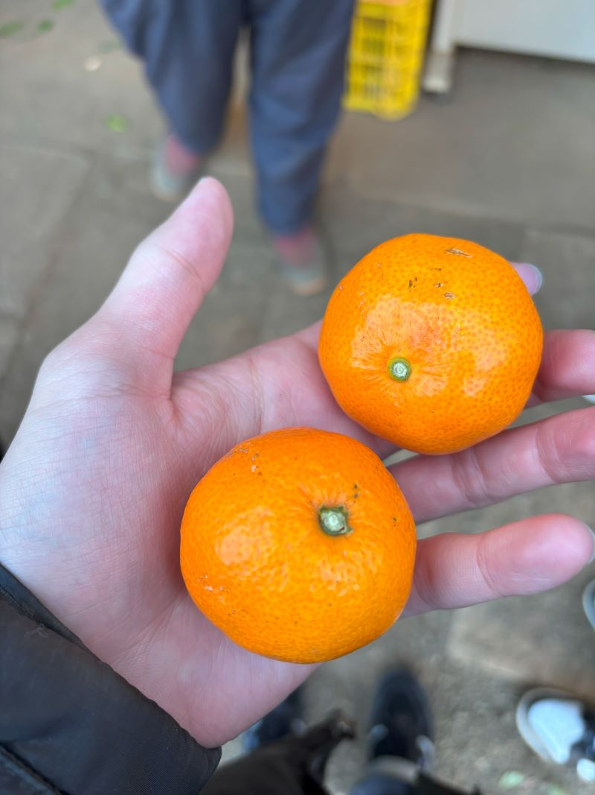

デザイン演習Ⅴ・Ⅵ
フィールドワークin伊勢原
まるひろ園(3人体制)
【規格外野菜について】
綺麗な物、保存時にダメになりそうなもの、傷があるもの
↑このように分けロスを減らす。農家によって規格外の状況が違う
売り手と買い手の基準の差、スーパーなら値段を下げれば売れる
例.みかん→痛みそう（変色）→持っていくまでに痛むことも。→直接来てくれるお客さんにサービスであげる、畑に返す
【抱える問題】
虫が発生←売れない、薬代がかかる
人員不足→売り方を変えないといけない
↑人員を増やし、客との間に人を仲介すると、客のニーズを聞けない、ニーズを聞いていると時間がかかる
環境の変化（温暖化、土砂崩れ）
もらったミカン↓

irodori（参入二年）
【規格外について】
規格外で困っていない。二割の規格外の見込みなら、2割増しで収穫
スーパーでセールする。見込みで作る。
キャベツ種0.01円 キャベツ300円人件費くらいしかかからない。ロスでお金面は困らない。また畑に戻す。
自分のレストランでスープにする←自分が食べれるから買う人がいる。規格外はニーズによって変わる。認識改革
100個も300個も変わらない。トラクター10～15分も変わらない
【課題】
獣害←イノシシ、鹿等
シェア畑ができない
法で禁止にしている。
農家にガソリン20lを買わせない。